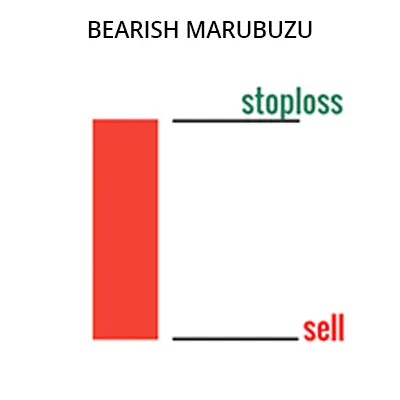
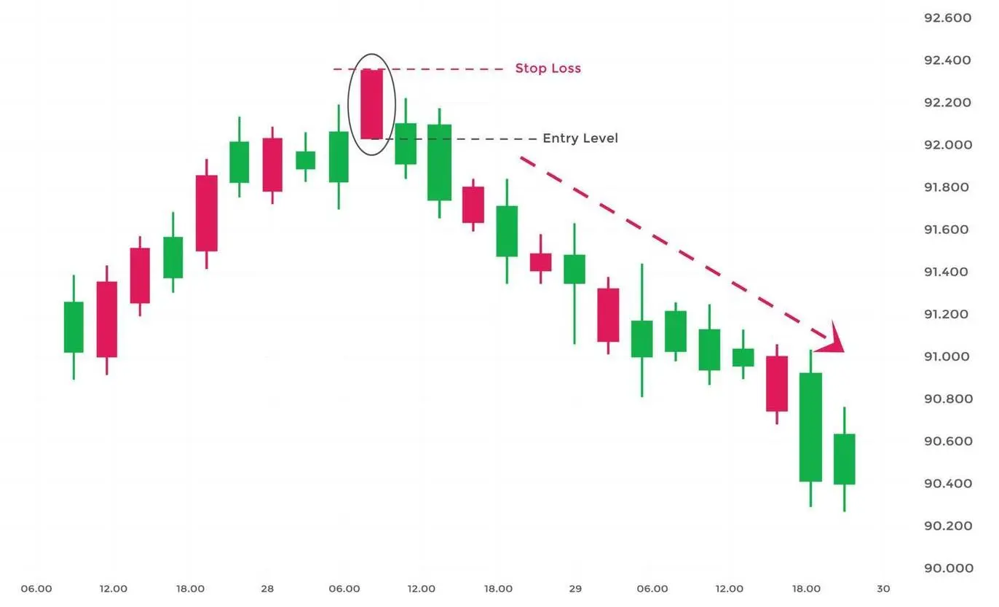

பேரிஷ் மாருபோஜை முறைமை ஒரு வணிகப்பட்டியல் முறைமை, அந்த சந்தையின் மேல்நோக்கி
வழிகாட்டிகளின் நீக்கம் மற்றும் கீழ்நோக்கி வழிகாட்டிகள் குறிப்பிடுகின்றன. இந்த முறைமை
ஒரு பெரிய, நீளமான உடலுடைய மொழுவின் மூலம் உருவாகின்றது, அந்த துவக்க மற்றும் மூடும்
விலை ஒன்றுகின்றன.
